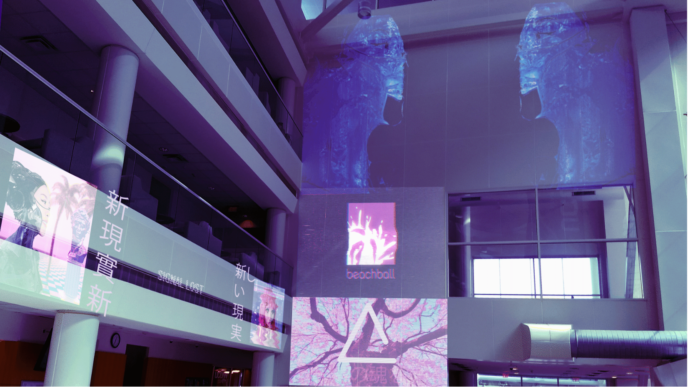

Project: UConn Cyberpunk Installation
Year: 2019
Category: Design, Project Management, Art Direction
Synopsis: I lead a team of creatives in developing a projection installation at UConn Stamford Paying homage to the Cyberpunk Genre. Over the course of several weeks, I guided my team from ideation to execution along with creating project graphics.
Process: Designs
Cyberpunk is defined by its juxtaposition of technological advancements including Artificial Intelligence, Nanotechnology, and Cybernetics with a culturally stagnant society. Other themes like consumerism and corporatism are also often explored within the genre making it a brilliant analogue for changes we are witnessing today. Observing the student body around us we noticed the profound influence of branding towards fashion choice. Freshman were often flexing brands like Supreme and Balenciaga while simultaneously talking about not being able to afford textbooks. We found that amusing. As such, our designs were influenced by a mix of both existing and fictional branding to tie our metanarrative to present reality.


Process: Logistics
During the process we faced a number of challenges, the first involving the projectors themselves. Our projectors were limited to low light conditions, meaning we could only properly test at night. In addition, the concourse lights impacted the projection image quality. Still, we were determined to make the installation work in a public space, so we put together a proposal to request accomodations. Here are some examples of visualizations we provided for approval.

Result